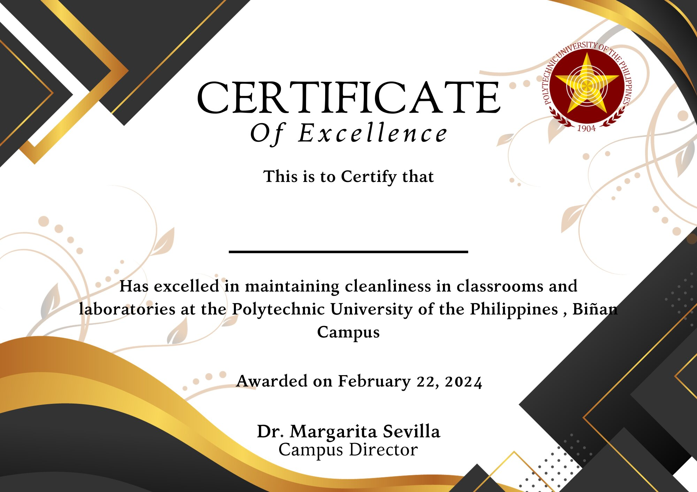

|  |
Every semester, the system will conduct evaluations to identify sections eligible for certificates. The certificate will be granted
to sections demonstrating cleanliness and tidiness in every classroom or laboratory they are assigned to. Sections less likely to be voted as the dirtiest will
qualify for the certificate. The evaluation process will be transparent and based on objective criteria.
|